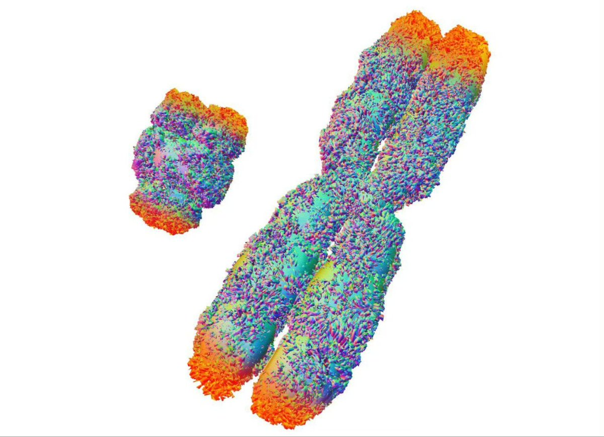
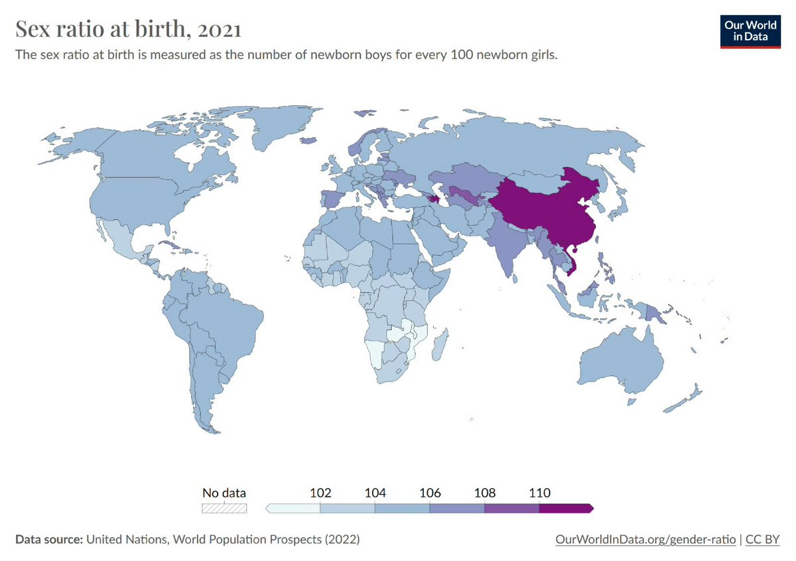
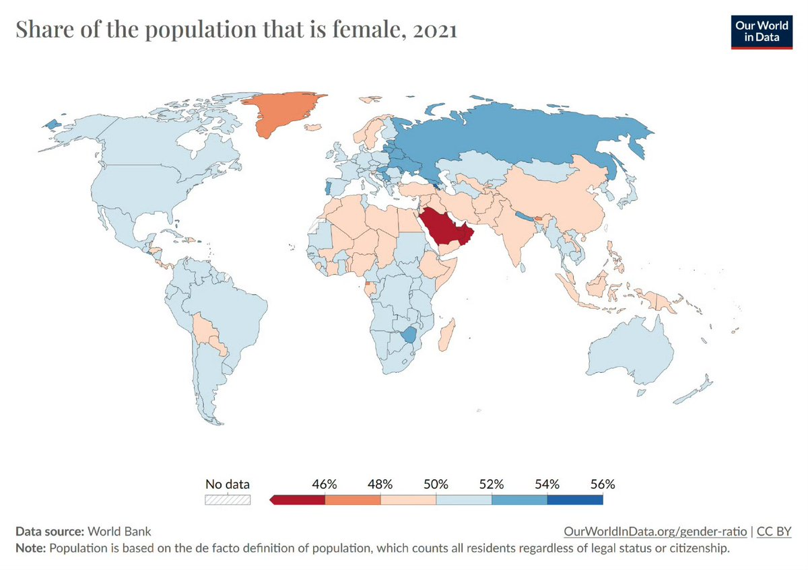

确实雄性激素会削弱免疫功能，让男孩更容易死于疾病；还会让他们更逞能，容易作死。到最后，整个种群的性别比例仍然会大体平衡。即便有了现代文明，男孩夭折率大大降低，但女性预期寿命仍然长于男性预期寿命——但这只是幻想。在蛮荒或者混乱的地方，男性死亡率很高，导致女性占多数；在发达而和平的地方，男性能够活下来，但寿命比不上女性，最后也是女性占多数；然而同样是在某些地方，却是男性占了多数，显然，是有更多的女孩，“悄无声息地死掉”了。




生物上来讲，生男生女的概率其实并不一样。严格来讲，自然状态的生育比例男女应该是105:100左右。
这是因为女人比男人多了一条X染色体——这条X染色体上的基因剂量太大，“处理”不好就会致死，导致她们更容易在胚胎极早期夭折。
女人的性染色体是XX，男人的是XY，这就麻烦了。… https://t.co/kPwM7hMJUt
这是因为女人比男人多了一条X染色体——这条X染色体上的基因剂量太大，“处理”不好就会致死，导致她们更容易在胚胎极早期夭折。
女人的性染色体是XX，男人的是XY，这就麻烦了。… https://t.co/kPwM7hMJUt